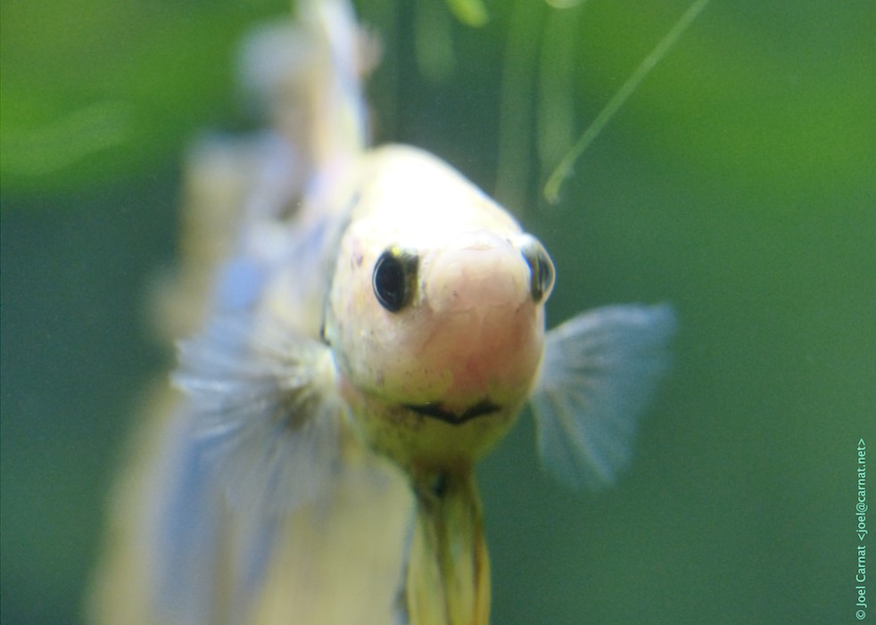
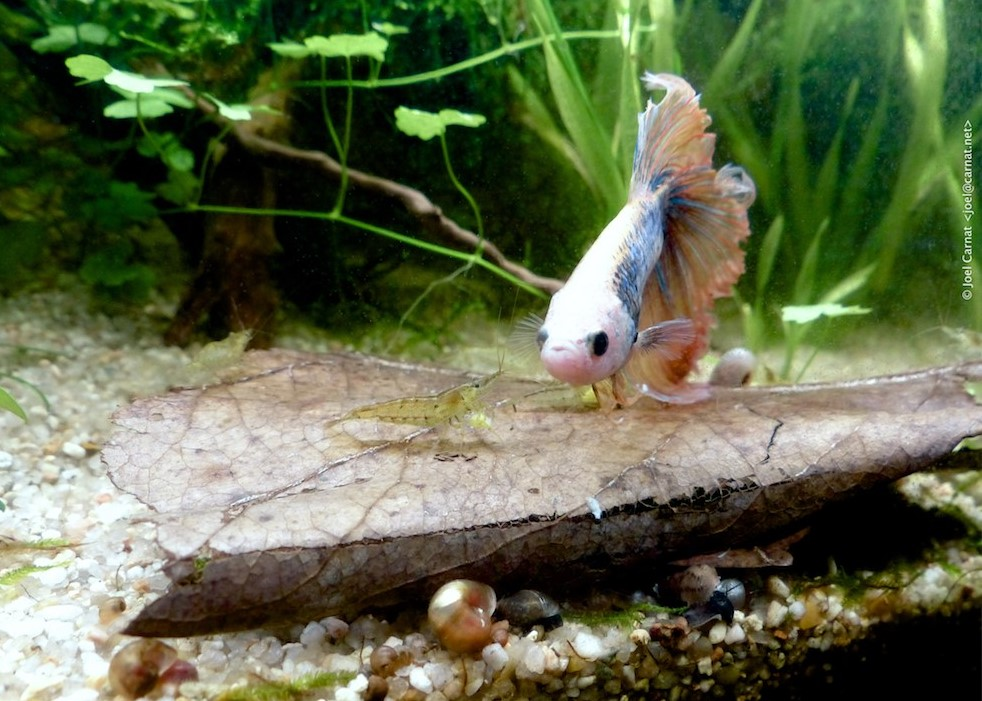

Feeding your betta exactly how they eat in the wild will most likely be difficult for most betta owners at home, which is why we use food that is available in the pet store. There are a large variety of fish foods available, which can make picking the right food daunting. Plus there is always the question of how much and how often, as overfeeding and underfeeding is bad for your fish, but it’s not like your fish will give a clear signal that they actually need feeding (in fact, your fish will always act hungry, don’t fall for it). Your best bet is to feed them twice a day with a very small amount of food. A good general guideline to keep in mind is that their stomach is about the size of their eyeball. It is also a good idea to fast them once a week so they can clear out their system.
Bettas can also be picky eaters. Some bettas refuse to eat certain foods but will quickly scarf down others. Some may even go as far as refusing to eat food that is actually healthy for them, which can make ensuring that your betta gets the proper nutrients a real challenge.
Because bettas are carnivores, they need a well balanced diet that is rich in protein. A combination of either flakes or pellets, along with occasional freeze dried, frozen, or live food will ensure that your betta gets the proper nutrients they need. It is best to schedule smaller feedings twice a day and to have a dedicated fasting day so they can clear out their system. It is also good to alternate between foods.
When buying flakes or pellets it is best to make sure that the amount of fillers are kept to a minimum. Fillers are typically listed as “wheat flour” in an ingredients list. If it is the first ingredient in the fish food then chances are it is more filler than actual nutritious food.
Most betta owners choose to feed their bettas pellets because they are nutritious and they are easy to feed to your betta. Pellets also create the leats amount of mess and can easily be removed if your betta doesn’t finish eating them. They are also easy to portion out for feeding. Most bettas will eat pellet food, but some bettas may opt for flakes.
It is important to make sure your pellet food is formulated for bettas and isn’t too big for them to fit into their mouths. Pellets that are too big may be crushed if need be.
Flake food is also a solid option, you juist need to make sure that the flakes are specifically formulated for bettas. This is a solid option for people that have fussy bettas who won’t eat pellets for whatever reason. Most bettas find flake food more difficult to eat than pellet food as it resembles the food they eat in the wild less, but there are always exceptions, and for those exceptional bettas we have betta flakes.
Freeze dried food is the closest thing to food that bettas will eat in the wild without having to maintain living foods or having to store food in the freezer. It is best to presoak freeze dried foods in water from your tank before feeding to your betta in order to prevent swelling. Good freeze dried foods to feed to your betta include freeze dried blood worms, brine shrimp, or daphnia.
Frozen food is great because it provides an option to betta owners to feed their bettas what they would eat in the wild without having to maintain living creatures that will eventually be eaten. Frozen food can be stores in a freezer for a long time, and chances are that most betta owners have a freezer at home. Frozen food is a bit pricier than pellets, flakes, and freeze dried food, but it is also packed with more nutrition and there is a reduced chance of bloat. Frozen bloodworms and frozen brine shrimp are good options for your betta.
Live food is the most nutritious for your betta as no nutrients were lost to processing or freezing. It is also the most enriching because your betta can enjoy chasing down their prey. However, one of the things you will have to watch out for when feeding live foods is the potential for parasites.
A betta needs a tank that is at least 5 gallons in order to add any invertebrate tankmates, and at least 10 gallons to add any additional fish. The tankmates you can add with your betta also depends on the needs of the tankmates you are considering. In general it is best to have tankmates that will stay away from the upper area of the tank, since that is where your betta will spend most of their time.
The tankmates you can add also has to do with your bettas temperament. Some bettas are more aggressive than others, and each indivisual fish will react differently to different tank mates. One betta may be perfectly fine with guppies and platys, while others will be offended by even a single snail entering their territory. It is important tio always have a backup plan in case things go south.
Invertebrates are a solid tank mate option with your betta as they tend to have a lower bio load and because most bettas will get along well with them. They also add color and movement to your tank without intruding on your bettas general territory. Some options include nerite snails, mystery snails, rabbit snails, amano shrimp, ghost shrimp, and cherry shrimp. If you decide to keep shrimp, chances are your betta will eat any baby shrimp, which is something to keep in mind. Some bettas will also eat smaller species of shrimp such as cherry or ghost shrimp. It really depends on your individual betta.
